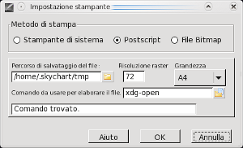

Menu File
Il menu File include le seguenti opzioni
Nuova cartina
La versione 3 di Cartes du Ciel permette di aprire più finestre, ciascuna con una diversa cartina. Il vantaggio è il poter visualizzare contemporaneamente cartine per diverse località, orari o anche modalità di visualizzazione.
Dopo aver creato nuove cartine è possibile disporle attraverso il menu Finestra, massimizzarle, minimizzarle, chiuderle o anche ridimensionare ciascuna cartina tenendo premuto il tasto sinistro del mouse sui lati destro e inferiore.
Apri
Questa opzione permette di aprire una cartina salvata in precedenza con la relativa configurazione di località e data.
Salva come...
Salva la cartina attiva in un file che potrà essere aperto in futuro tramite l'opzione Apri.
Chiudi cartina
Nel caso si abbiano più cartine aperte, questa opzione chiuderà la sola cartina attiva.
Reset cartina e impostazioni
Reimposta la visuale della cartina e le impostazioni all'ultimo salvataggio disponibile. Ha lo stesso effetto di uscire dal programma senza salvare le impostazioni e riavviarlo.
Agenda
Questa funzione permette di elencare i fenomeni astronomici per un dato periodo di tempo.
La finestra è composta da sette aree:
- un'area di inserimento dati. Vedi su questa pagina per maggiori informazioni.
- una scheda Crepuscolo. Vedi su questa pagina per maggiori informazioni.
- una scheda Pianeta. Vedi su questa pagina per maggiori informazioni.
- una scheda Comete. Vedi su questa pagina per maggiori informazioni.
- una scheda Asteroidi. Vedi su questa pagina per maggiori informazioni.
- una scheda Eclissi di Sole. Vedi su questa pagina per maggiori informazioni.
- una scheda Eclissi di Luna. Vedi su questa pagina per maggiori informazioni.
Stelle Variabili
Lancia il programma Variable Stars Observer.
Salva immagine...
La cartina attiva verrà salvata come immagine. E' possibile selezionare PNG, JPEG o BMP come formato di salvataggio.
Stampa
 Apre la finestra di dialogo Stampa cartina, che permette di scegliere le impostazioni per la stampa su una periferica, sia essa una stampante reale o un file.
La stampa può essere effettuata a colori così come a schermo, in bianco e nero o in bianco e nero invertiti (con fondo cielo nero). Si possono inoltre impostare l'orientazione e i margini di stampa.
Apre la finestra di dialogo Stampa cartina, che permette di scegliere le impostazioni per la stampa su una periferica, sia essa una stampante reale o un file.
La stampa può essere effettuata a colori così come a schermo, in bianco e nero o in bianco e nero invertiti (con fondo cielo nero). Si possono inoltre impostare l'orientazione e i margini di stampa.
Impostazioni stampante
 Configura la stampante. Ci sono tre opzioni:
{kind=link}
- Stampante di sistema: per scegliere una stampante reale.
- Postscript: consente la stampa su file postscript. Richiede che Ghostscript e GsView32 siano correttamente installati e configurati nei path di sistema. Funziona solo con la versione 7.xx di GsView32.
- File Bitmap: consente la stampa come file BMP. Richiede che MsPaint sia correttamente configurato nei path di sistema.
Esci
Solo questo, esce dal programma Cartes du Ciel.